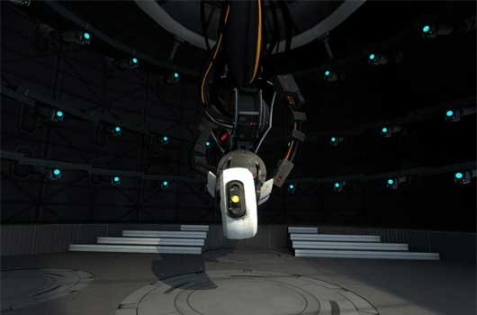
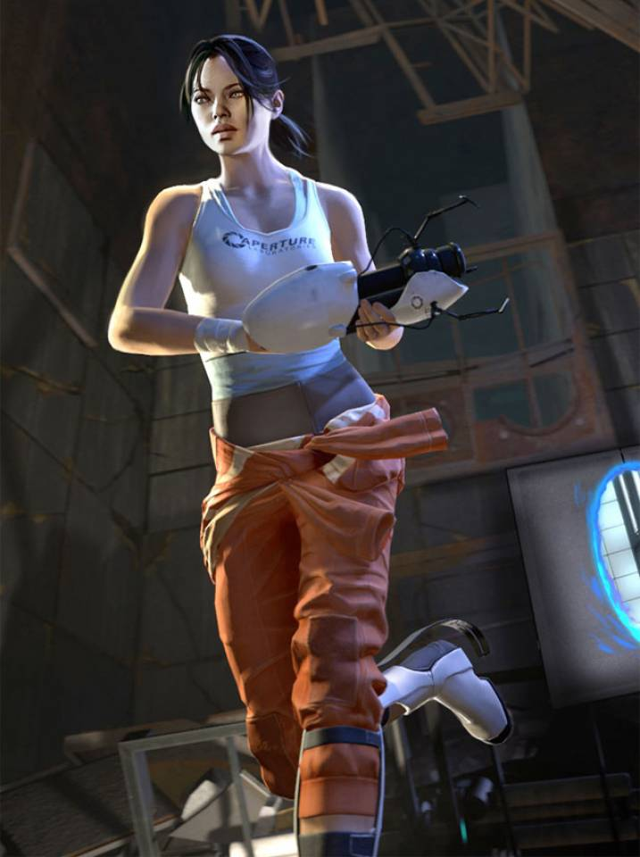
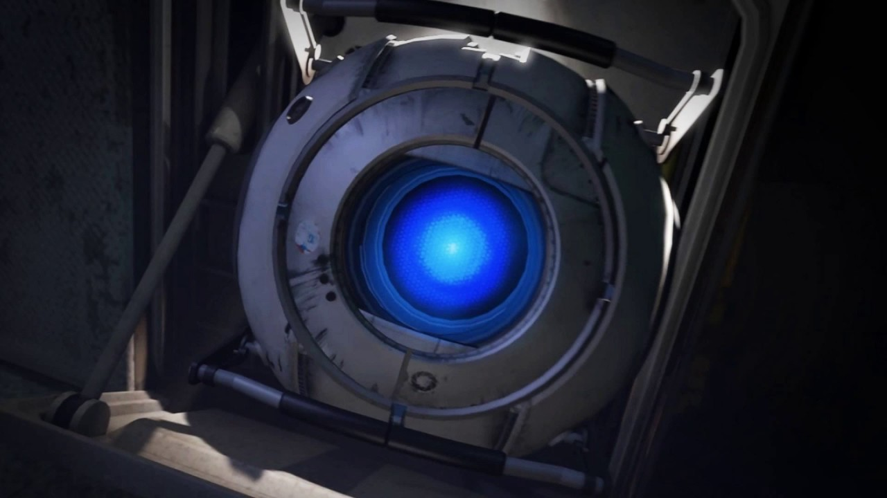

Okay, look: We both said a lot of things that you're going to regret, but I think we can put our differences behind us; for science... you monster.
GLaDOS (Genetic Lifeform and Disk Operating System) is the central core designed to control, guide, and oversee the Aperture Science computer-aided Enrichment Center. With the ability to shift and move facilities and various chambers, GLaDOS is able to achieve a seamless and almost infinite testing design whilst residing in the Central AI Chamber.
In possession of a feminine programming, she is the antagonist of Portal and the first half of the single-player campaign in Portal 2. During the later half, she becomes the game's tritagonist. In the game's cooperative campaign, GLaDOS is the testing supervisor of Atlas and P-body.
GLaDOS is voiced by opera singer and voice actress Ellen McLain.

Chell, documented as Test Subject #1 but previously as #1498, was a test subject of the Aperture Science computer-aided Enrichment Center, and was involved in the testing of the Company's Handheld Portal Device (commonly known as the Portal Gun). She is the silent protagonist of Portal and the single-player campaign in Portal 2. Very little is known of her past, beyond her possible abandonment at birth and her stubborn will to live. Throughout the series, Chell is antagonized by the AI and facility overseer GLaDOS during her testing courses. Wielding only the Handheld Portal Device, she eventually utilizes this device as a means of avoiding hazards and bypassing various sections of the Facility in order to escape.

The Inteligence Dampening Sphere, more commonly known as Wheatley, is a personality core of masculine programming and English West Country accent who appears in the single-player campaign of Portal 2. He serves as the game's deuteragonist, guiding Chell through her efforts in escaping the Aperture Science Enrichment Center. However, half-way through the game he and GLaDOS switch roles as she becomes Chell's deuteragonist and Wheatley becomes the game's main antagonist. Wheatley is voiced by British actor and comedian Stephen Merchant.